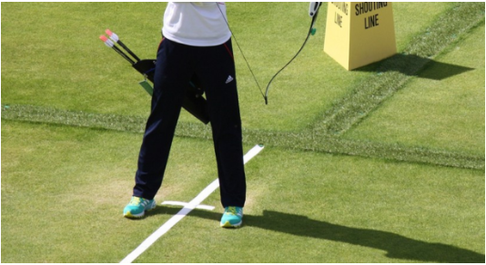

Stance adalah sikap atau posisi kaki pemanah pada lantai atau tanah yang berjarak kurang lebih 3-4 kepalan tangan orang dewasa atau sekitar 30 cm, dengan posisi tubuh tegak serta titik berat badan bertumpu pada kedua kaki secara seimbang.
Stance dibagi menjadi 4 macam yaitu: Square Stance (berdiri sejajar), Open stance (berdiri terbuka), Close stance (berdiri tertutup), Oblique stance (berdiri menyerong).
Square stance adalah sikap berdiri seorang pemanah dengan posisi kaki sejajar. Umumnya sikap ini dilakukan pemanah ketika mereka pertama kali belajar memanah. Berikut tahapan yang perlu dilakukan:
1. Pertama pemanah berdiri dengan posisi kaki antara shooting line.
2. Kemudian pemanah berdiri sejajar dengan sasaran.
3. Posisi pemanah berdiri rileks dan memegang busur dengan tangan kiri.
4. Sesuaikan Jarak antar kaki selebar bahu.
5. Kemudian kepala menoleh ke kiri lurus ke arah target.
Open stance atau sikap berdiri terbuka adalah sikap berdiri seorang pemanah denan posisi kaki depan terbuka. Posisi ini dilakukan oleh pemanah pada saat melakukan penembakan, sikap tersebut diterapkan selalu sama atau konsisten selama penembakan berlangsung. Berikut tahapan yang perlu dilakukan:
1.Pertama pemanah berdiri dengan posisi kaki di antara shooting line.
2.Posisi pemanah berdiri rileks dan memegang busur dengan tangan kiri.
3.Sesuaikan jarak antar kaki selebar bahu.
4.Atur posisi tubuh sedikit mendekat pada sasaran.
5.Posisi kaki yang depan sedikit mengarah ke target.
6.Posisi kaki yang belakang sejajar dengan target dan di depan kaki yang depan.
Close stance atau sikap berdiri tertutup adalah sikap berdiri seorang pemanah dengan posisi kaki depan tertutup. Posisi ini dilakukan oleh pemanah pada saat melakukan penembakan, sikap tersebut dilakukan secara konsisten selama penembakan berlangsung. Berikut tahapan yang dilakukan:
1.Pemanah berdiri dengan posisi kaki di antara shooting line.
2.Posisi pemanah berdiri rileks dan memegang busur dengan tangan kiri.
3.Atur jarak antar kaki selebar bahu.
4.Atur posisi tubuh sedikit menjauh dari sasaran.
5.Posisi kaki yang belakang sedikit mengarah target.
6.Posisi kaki yang depan berada lebih depan dari kaki yang belakang.
Oblique stance adalah sikap berdiri seorang pemanah dengan kaki pada lantai menyerong. Sikap ini adalah sikap yang paling sulit untuk dilakukan sempurna pemanah senior terlebih lagi pemula. Namun teknik ini memiliki keseimbagan yang paling baik bagi pemanah. Berikut tahapan yang dilakukan:
1.Pemanah berdiri dengan posisi kaki di antara shooting line.
2.Pemanah berdiri rileks dan memegang busur dengan tangan kiri.
3.Jarak antar kaki selebar bahu.
4.Posisi tubuh pemanah sedikir menyerong dari sasaran.
5.Posisi kaki depan sedikit mengarah ke target.
6.Posisi kaki depan beraa lebih di depan dari kaki yang di belakang.